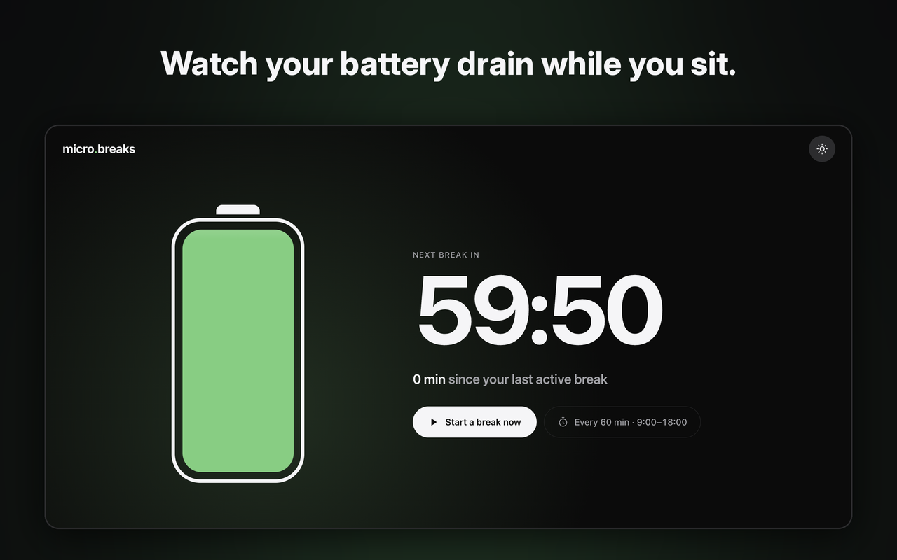
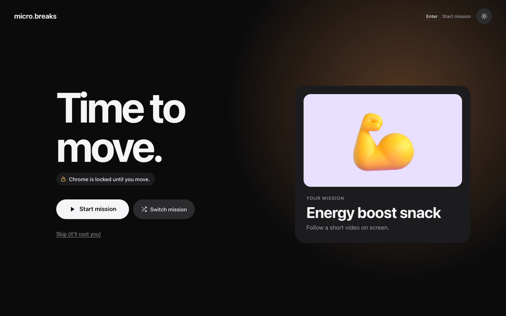

Move a little, every hour you sit.
A battery on every new tab drains while you sit. When it's empty, Chrome locks onto one short mission that gets you out of your chair. Do it, and you're recharged.
Install micro.breaks
How it works
- The battery drains while you sit, during the working hours you set.
- When it's empty, Chrome locks onto one mission: a walk, a glass of water, a short stretch video. Your other apps are not blocked.
- Move, and it recharges.
- Really can't right now? A skip challenge lets you out, after a few sums or a sentence to type.
- Quiet the rest of the time: nothing outside your hours, at lunch, or on days off.

Google Calendar
If you choose to connect Google Calendar, micro.breaks reads when you are busy, and only that, so it never prompts you during a meeting. It does not read event titles, guests or descriptions, and your busy times never leave your computer.